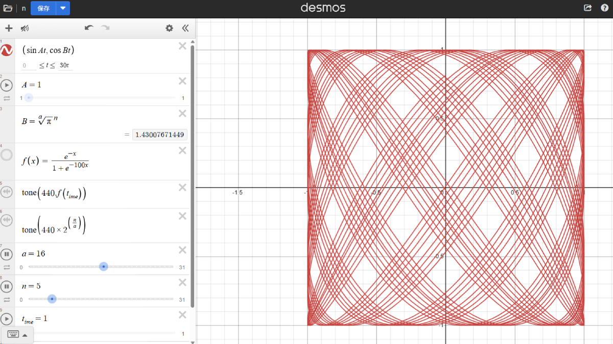
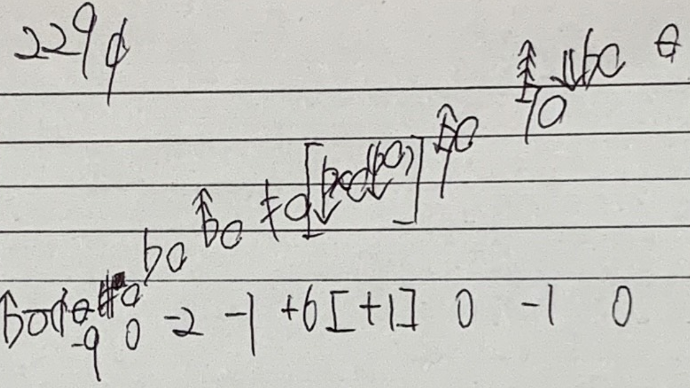
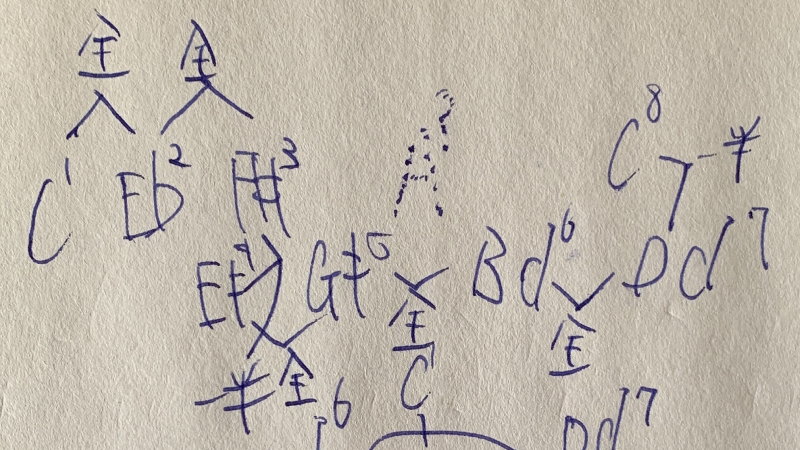

Tuning and Structural Exploration
- October 13, 2025 53-EDO Decay Function and Lissajous Visualization — Harmonic Interaction and Temporal Damping A Desmos-based experiment combining 53-EDO sound synthesis with a sigmoid decay function and Lissajous visualization. It models overtone damping and microtonal alignment, revealing how harmonic phase relationships change across 53-EDO steps.
- August 5, 2025 Pure Just Tuning — Complete Harmonic Modulation with 8 Notes A structural redefinition of just intonation enabling full modulation. This system integrates ratios like 11/8 and 13/8 in a logarithmic scale-space, employing a cyclic alternation of fifths and fourths to maintain harmonic continuity across key shifts.
-  July 28, 2025 Dynamic Harmony and Lissajous Curves — Visualizing Relationships Between Equal Temperaments This work presents a system that dynamically links sound and visuals using Lissajous curves. The parametric function \((\sin At, \cos Bt)\) is used, where A is fixed at 1, and B is defined as \(B = \sqrt[a]{\pi}^n\). This construction allows the...
-
 May 13, 2025
Designing a Custom Scale Incorporating φ³ and 125/32
This document presents an experimental tuning system that incorporates both the irrational ratio φ³ (the cube of the golden ratio) and the just intonation ratio 125/32, which corresponds to a pure major third. Drawing inspiration from the...
May 13, 2025
Designing a Custom Scale Incorporating φ³ and 125/32
This document presents an experimental tuning system that incorporates both the irrational ratio φ³ (the cube of the golden ratio) and the just intonation ratio 125/32, which corresponds to a pure major third. Drawing inspiration from the...
-  May 8, 2025 Subdividing the 15/4 Interval: Microtonal Notation and Performance-Tunable Deviations This project explores a notational and structural approach to dividing the 15/4 just interval into equal steps of 15, 10, and 5, inspired by Bohlen–Pierce concepts but diverging from it in tuning and application. Each subdivision is notated...
-
 May 8, 2025
Spatial Mapping of Just Intonation in Overtone Dimensions
This record explores a geometric approach to understanding pitch relationships in just intonation. It visualizes three overtone series—3rd (perfect fifths), 5th (major thirds), and 11th (undecimal intervals)—as spatial axes, representing...
May 8, 2025
Spatial Mapping of Just Intonation in Overtone Dimensions
This record explores a geometric approach to understanding pitch relationships in just intonation. It visualizes three overtone series—3rd (perfect fifths), 5th (major thirds), and 11th (undecimal intervals)—as spatial axes, representing...
- May 7, 2025 Exploring the Structure of Comma Pumps in 72-EDO This record documents an experimental attempt to construct a comma pump within the 72-tone equal temperament (72-TET) system. Based on pure intervals such as 3/2, 4/3, and 5/4, the piece explores how small discrepancies—known as...
- May 6, 2025 Just Intonation Experiment: 28-Tone Design Compatible with 12 Major Keys This work presents an experimental tuning system based on just intonation, constructed using 28 pitches selected from Euler’s Tonnetz lattice (Euler lattice). The system aims to maintain compatibility with all 12 major chords while...
-  May 5, 2025 Special Scale Design Matching 8-EDO This work presents a special heptatonic (7-tone) scale carefully constructed to align with most tones in the 8-EDO system (eight equal divisions of the octave). Through both sketch and Terpstra Keyboard visualization, it reveals...
- May 4, 2025 n-EDO Ruler (Equal Temperament Scale Ruler) This record presents a hand-drawn sketch of a "ruler" that visually aligns various equal divisions of the octave (EDO) on a single line. With 7-EDO at the far left and 5-EDO at the far right, a number of intermediate...
- May 4, 2025 Phi-Based Temperament (φ-TE) This document records the construction of a unique temperament, φ-TE (Phi-Based Equal Temperament), based on the irrational number φ (the golden ratio), using the Terpstra Keyboard WebApp. Each pitch interval in this scale is...